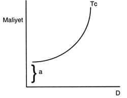
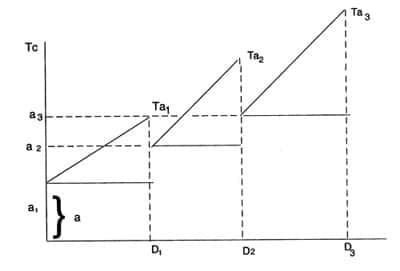
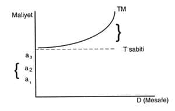

Sanayi öncesi toplum, tarımsal üretimin ekonominin temelini teşkil ettiği ve bütün üretim faaliyetlerinin; tarımda öküz ve saban; zenaatta tezgâh, el emeği gibi organik enerjiye dayandığı bir toplum sistemidir. Geleneksel toplumda, tarımsal teknoloji değişiklik geçirememiştir. Bütün mülkiyet şekilleri, yönetimdeki kurumlaşmalar, ulaşım örgütü, şehirsel yapı bu faktörün etrafında şekillenmektedir. Bizim ele alacağımız konu, bu toplumun genel bir betimlemesi değildir. Üretim ve tüketim merkezlerinin bağıntısını, kısacası üretimin dağıtımını sağlayan bir faaliyetin; ulaştırma sorununun üzerinde durmak istiyoruz.
Sanayi öncesi toplumda ulaştırma sorunları:
1) Yollar ve konaklama tesisleri,
2) Ulaşımı sağlayan araçlar
olmak üzere, iki odak noktasında mütalaa edilebilir.
Genellikle tüccar gruplarının organizasyonu ve ticarî mal akışının düzeni bu iki odağa göre biçimlenmektedir. Yolların dağılımı ve devenin niçin ulaşımda temel araç olduğu sorunu, aslında geleneksel sistemlerin sınaî yapısından çok, ziraî teknolojiyle ve buna bağlı olarak yerleşme düzeniyle ilgilidir. Bu nedenle, araştırmaların bu sorunları aydınlığa çıkartması gerekmektedir. Burada yol ve konaklama meselelerini içeren birinci noktadan çok, ulaştırma araçlarının niteliği ve bundan dolayı taşıma maliyetinin ne şekilde teşekkül ettiği üzerinde durulacaktır. Bununla beraber, konuya girmek için ticaretin organizasyonu üzerinde literatürde bilinen gerçekleri kısaca tekrarlamakta fayda vardır.
Tarihçiler bugüne kadar, mevcut yolları, konaklama kurumlarını tesbite çalışmışlardır. Tüccar grupları ve bunların kendi aralarındaki ihtisas ve sermaye kontrolüne dayanan farklılaşma (occupational and functional differentiation) ilgiyi çekmiş ve önemli açıklamalar getirilmiştir.[159]
Bununla ilgili olarak, şehirlerin yapısı, mekân dağılımı üzerinde bu kurum ve mekanizmanın yaptığı etkiler, şehirciler ve sosyologların da ilgisini çekmeye başlamıştır.[160] Geleneksel sistemlerin ulaşım sorunları; dönemle ilgili seyahatnâmeler, mahkeme kayıtları, loncalarla ilgili dava ve tescil vesikaları, günlük narh defterleri gibi arşiv malzemesinin incelenmesiyle daha geniş ölçüde aydınlanacaktır. Burada belirtilmesi gereken bir özellik vardır: Organik enerjiyle üretim yapılan toplumda, güçlü küçük yerleşme merkezleri yoktur. Kıtalararası ticaretin organizasyonu ve emniyeti, daima imparatorluk çapında bir örgütü gerektirir. Bu nedenle eski ve ortaçağlarda yol şebekesi, özellikle Ortadoğu ülkelerinde önemli bir ölçüde bürokratik ve organizasyonel bir dehanın eseri olarak görülmüştür. Genellikle ortaçağların yol sistemleri, yani deve kervanlarının geçeceği yollar, Roma sisteminden devralınmıştır. Ancak eski çağların köleci sistemlerinde, devenin bir ulaşım vasıtası olmayıp, bu fonksiyonun katır kervanlarınca yerine getirildiği biliniyor.[161] Deve kervanları geleneksel ekonomilerde, Doğulu sistemlerin ortaçağlarda geliştirdiği bir ulaştırma organizasyonudur. İrem Acaroğlu, Roma çağına kadarki klasik Anadolu şehir yapısını ele alan eserinde kervan yollarının, Antik Roma taş döşeli yollarını izlediğini birçok yerde görmüştür.[162] (Örneğin Efes civarındaki yol, gene Antakya-Cilvegözü arasındaki yol). Ortadoğu’da özellikle konaklama bakımından, Osmanlıların Abbasî-Selçuklu geleneğini devam ettirdikleri de üzerinde durulan bir tezdir. Bugün literatürde Ortadoğu toplumlarının geliştirdiği konaklama sistemlerine dair önemli makale ve monografik çalışmalar vardır.[163] Bu konu üzerinde fazla durmayı gerekli bulmadığımızdan, açıklamalarımızda kullanacağımız birkaç noktayı belirtmek istiyoruz.
1) Yol emniyeti ve konaklama imkânları tüccar kervanı tarafından değil, merkezî otoritece yükümlenilmiş ve organize edilmiştir. Özellikle geleneksel sistemin bünyesel özellikleri, uzun mesafe ticaretinde, mahallî organların veya tüccar gruplarının bu tür fonksiyonları yerine getirmesini imkânsızlaştırmaktır. Bu nedenledir ki sorunu, merkezî otoritenin bürokratik ve organizasyonel tedbirlerle başarılı bir şekilde çözümlediği görülmektedir. Ünlü Slav tarihçisi Jirecek’in Osmanlı İmparatorluğu’nu –modern zamanlara kadar tüm tarihte– Roma’dan sonra yol sistemini en iyi çözümleyen sistem olarak nitelemesi bundan dolayıdır.
2) Kervansaray gibi konaklama tesisleri ticarî organizasyon kadar, mekân organizasyonunun da oluşumunda önemli rol oynar. Kervansaray, kervanlar için konaklama yeri fonksiyonu kadar, civarın ekonomik aktivitesi, nüfus toplama ve emniyeti üzerinde de etkin rol oynar.
Bu kurum katı kurallar ve yönetim altındadır. Giriş ve çıkış belirli saatler dahilinde mümkündür. Kervansaraydaki hırsızlık ve soygun olaylarından devlet adına, kervansaray amiri sorumludur (Geleneksel ticarette sigorta yerine, tazminat ödemenin söz konusu olduğu görülüyor).[164] Kervansaray, müstahkem bir kale, adeta bir Eski Roma oppidum’udur. Müessese gerek ticarî, gerek güvenlik ve kontrol bakımından onun gelişmiş bir devamı gibidir.(*27) Keza, kervanların kuruluşu ve hareket zamanı da muayyen kaidelere bağlıdır. İstendiği zaman yola çıkılması, yeni teşebbüsle yeni kervan teşkili olağan değildir. Yolların tamir ve emniyeti, muayyen gruplara, derbentçi ve kaldırımcılara bırakılır ve devletçe vergi muafiyeti gibi teşvik tedbirleri sağlanır.[165]
Geleneksel sistemde, ticaret ve ticarî kapital seçkin bir yere sahip olamamıştır. Tüccarlar merkantilist ekonomilerdeki gibi aktif, gittikçe zenginleşen bir grup değildir. Geleneksel sistemin zengin insanları toprak beyleridir. Bu sistemde tüccar, henüz üretici bir fonksiyon sahibi olarak görülmez, küçümsenir. Bu, tarımsal teknolojide değişme olmaması, üretimin artıp yeni ihtiyaçların, yeni üretim dallarının ve pazarlamanın gelişmemesinden ileri gelmektedir. Gerçekte, bütün Doğu kaynaklarında, Tevrat’tan beri ticarete ve tüccara karşı kuşkulu bir tutumun varlığı görülmektedir. Bunun nedenleri arasında, bu toplumlarda zarurî maddelerin uzak mesafe ticaretine girmemesini, ticaretin daha çok dar bir elitin lüks emtia ihtiyacını tatmine yönelmesini sayabiliriz. Bununla beraber, kervan ticaretinin yoğunlaştığı 8. ve 9. yüzyıl İslâm dünyasında toplumsal sınıf tasniflerinde değişiklik görülmektedir.
Ticaret yolu ile servet yapmanın bir Müslüman için iftihar vesilesi olduğunu, Hanefî fukahasından Muhammedü’ş-Şeybanî söylemiştir. Fakat hirfet ahlâkının katılığı içinde kalan bazı ulemâ, meselâ Gazalî bu görüşte değildir.[166]
Bu toplumun en zengin tabakasının tüccar olmadığı keyfiyeti, önemli bir noktadır. Meselâ, Osmanlı’da özellikle 15. asırda zenginleşen tüccar çoktu. Ne var ki, en zengin tüccar bile toprağın kontrolünü elde tutan yönetici sınıfla mukayese edilememektedir. 1500’lerde bir sancak beyinin yıllık geliri 4.000-12.000 Ducat altını iken, Bursa’nın en zengin sarraf ve tüccarı, nadiren 4.000 Ducat altınına sahiptir.[167] Nitekim, bu sistem ve bu tür düşünce Osmanlılarda büyük değişiklik göstermemiştir.[168] Osmanlı Devleti’nin ve diğer Doğu devlet sistemlerinin geleneksel ticareti teşvik ve himayesinde; lüks emtia naklinin devamı ve posta-habercilik gibi fonksiyonların yerine getirilmesi daha önemli bir faktör olmuştur.[169] Bu sistemlerde lonca nizamını bozacak bir ticarî organizasyon ve faaliyet düşünülemezdi.
Şimdi de, bir kervanın organizasyonu ve tüccar grupları arasındaki ihtisaslaşmanın bazı noktalarını gözden geçirelim. Bu konuda Prof. İnalcık’ın açıklamalarını temel alarak, ilgili yönleri belirleyebiliriz.
Hellenistik devre kadar giden bir geleneğe göre, Ortadoğu kültürü üç çeşit tacir tanır:
1) Stok yapan ve zamanı gelince satan tüccar. Bunlara Hazin denir.
2) Bölgelerarası kervan veya deniz ticaretini bizzat yöneten, Saffar denen tüccar tipi. Bunlar tam nakliyeci tüccardır.
3) Mücehhiz denen; sermaye ve donatım masraflarını karşılayarak ticarete katılanlar... Bunlar genellikle zengin irat sahipleri, yöneticilerdir. Bu usule Mudaraba (Commanda) denir ki, asıl şirket faaliyetlerinden sayılmaktadır.[170]
Gerek Osmanlı ülkesinde gerek İspanyol ve İtalyan şehirlerinde Commanda yolu ile kazanç sağlayan tüccar çok görülmekteydi.
Geleneksel ekonomi sisteminde, büyük şehirlerin iaşe ve ibatesi piyasa mekanizması ile değil, cebrî inhisarlarla sağlanmakta idi. Örneğin, İstanbul için zarurî ihtiyaç maddeleri karadan kervan yoluyla değil, deniz yoluyla sağlanırdı. 17. yüzyıl ortalarında Karadeniz’de 2.000, Akdeniz’de 3.000 kaptan İstanbul’un zahire alım ve taşıma işini yerine getiriyordu. Bu spekülatörler, sonraları Avrupa gemilerine gayrikanunî bir şekilde kaçak zahire devretmeye başladılar.[171]
Kervan mübrem gıda maddeleri ve benzeri tüketim maddelerini taşımadığı gibi, geniş ölçüde yolcu nakli gibi bir ihtiyacı da yerine getiremez. Bu uzun ve zahmetli yolculuğa herkes katlanamaz. Bundan başka, kervana katılmak, kervan emininin iznine bağlıdır. Kervan hamulesi fırsat bulunan yerlerde gemilere yüklenir. Meselâ, Balkanlar’da Köstence-Tuna yolu, Ege’de İzmir körfezi, Mezopotamya’da Dicle nehri uygun güzergâhlardandır. Keza, Fatımîler devrinde Mısır-Lübnan ticareti önemli bir ölçüde deniz ulaşımına dayanıyordu. Goitein, Nil ve Akdeniz’de bu dönemde işleyen 150 kadar gemi tesbit edebilmiştir.[172] Son olarak belirtilecek husus, kervanın iki merkez arasında sabit kalem ve hacimdeki mallarla gidip gelemeyeceğidir. Uğradığı her merkezde mal alıp, mal satar. Bu özellikleri kısaca gözden geçirdikten sonra, deve ulaşımındaki taşıma maliyeti üzerinde durabiliriz.
Devenin Taşıma Maliyeti Eğrisi
Kervan ticaretinin gerektirdiği yol sistemi ve yol emniyetini, tüccar gruplarının yapısını gözden geçirdikten sonra, taşınan malın niteliğini, yükleme, boşaltma masraflarını; kısacası, taşıma maliyetinin teşekkülünü ve bundan doğacak neticeleri tartışabiliriz. Bu konular yazıda teorik olarak ele alınacak, ne gibi hesaplamalar yapılması gerektiği belirtilecektir. Bu yazı gerekli belgesel tesbitler için bir tasarımdır.
Öncelikle bilinmesi gereken bir özellik, deve ile ulaşımın uzun mesafe ve uzun zamana yönelik bir ticaret tipi yarattığıdır. Kısa mesafe ticareti, daha çok ilkçağın köleci üretime dayanan sistemlerinde görülür ve ulaşım hayvanı katırlardır. Osmanlıların ve Selçukluların ilk devirden Anadolu için yeni bir deve melezini geliştirdiklerine ve bu işi örgütlediklerine hocamız Halil İnalcık işaret etmiştir. İklim, Arabistan develeri için müsait değildir. Bu nedenle dayanıklı Baktria develeri ile yerli ve diğer cinslerin melezi elde edilmiştir. Gerek savaş ve gerek ticaret için Boğurcu’nun (bir cins deve), Arapların ilk zamanlarından beri istihdam edildiği anlaşılıyor. Gene belirli noktalarda deve parkları (bir tür istasyon) ve deve pazarları teşekkül[173] ettiği, bu konuda devlet kontrol ve yönetimi görülmektedir. Anadolu’da uzun ve kısa mesafede bu hayvan geniş ölçüde kullanılmıştır. Kısa mesafede mübrem mal taşındığı görülür. Uzun mesafeye yönelen deve ticaretinde ise, modern ulaştırmanın tersine, kervanın iki merkez arasındaki uzun mesafeyi aynı yük ve mal çeşidi ile aşması beklenemez. Muayyen bir noktadan, örneğin, on kalem malla hareket eden kervan bunu uğradığı yerlerde satmak, yerine yenilerini almak suretiyle öbür hedefe, değişik bir emtia kompozisyonuyla ulaşacaktır. Katar sayısının azalıp artması, erzakın yenilenmesi, bazen vakıf kervansaraylarda konaklama, yem ve yemeğin bedava olması gibi azaltıcı etkenlerden dolayı devamlı surette artan veya azalan bir maliyet elde edemeyiz. Eğer değişmeyen şartlar altında sabit bir mal miktarı ile belirli bir mesafe aşılsa idi, şöyle bir maliyet eğrisi ve denklemi elde ederdik. (Şekil 1)

Şekil 1
Burada:
Tc: Toplam maliyet
D: Mesafe
a: Başlangıç, yükleme maliyeti
k: Birim malın, birim mesafede taşıma sabitesi olduğuna göre;
toplam maliyet Tc = a + (D.k) denklemi ile ifade edilecektir. Ne var ki, kervanın taşıma masraflarının, kısa mesafelerde konaklama, alışveriş dolayısıyla devamlı bir azalış ve bu azalışı izleyen bir artış göstermesi; lineer bir maliyet eğrisi ile durumu ifade etmemize manidir.
Bilindiği gibi, A şehrinden on kalem malla kalkan kervan, bundan sonra gelen B şehrinde bir kısım malı satar. Kervan ilk anda buraya kadar yaptığı masrafları tamamen veya kısmen karşılayacak bir hasıla elde etmiştir. Müteakiben tekrar yeni mallar satın alır ve C şehrine hareket eder. Bu sefer aynı olay tekrarlanır. Ne var ki, bu sefer maliyet hiçbir zaman başlangıç noktasında değil, daha yüksek bir seviyede teşekkül eder. Üstelik yeniden harekette tekrar ani bir yükseliş (yükleme ve satın almalardan dolayı) görülecektir. Yani, süreci açık bir şekilde ifade ettiğimizde, her iki nokta arasındaki mesafede yeniden yapılan yükleme masraflarını hesaba katmaktayız. Bu durumda:
Tc [a1 + (Da . ka)] + [a2 + (Db . kb)] + ..... [an + (Dn . kn)] denklemi ile maliyeti hesaplarız. Burada a = devenin bakım, besleme masrafları + kervan sürücü masrafları + yükleme kapasitesi ile değişen yük miktarı arasındaki farktır. Bu yeni durumu bir diagram üzerinde gösterelim. (Şekil 2a)

Şekil 2a
Bu durumda toplam taşıma maliyeti denklemi ve denklemi ifade eden eğri şu şekilde teşekkül eder. (Şekil 2b)
Tc = Ânai + Ân Di ki
i=1 i=1
i= 1 .............. n

Şekil 2b
Görüldüğü üzere, kervanın anlattığımız şekilde organizasyonu ve izlediği ticarî usul, taşıma masraflarının hızla artmasını önlemektedir. Böylece, yol üstü merkezlerde fiyatlar son ulaşım noktasına nazaran daha ucuz olmakta, bu nedenle de ticaret kervanları bütün bir ülkenin imalâtını merkezler arasında dağıtabilmektedirler. Hesaplamalarımızdaki sürücü, hamal, erzak, konaklama masraflarını somut belgelerden elde ettikçe, daha ikna edici sonuçlar sağlanması mümkündür. Sigorta masraflarının maliyete etkisi olmayacağını biliyoruz. Zira, geleneksel ticarette bu tür masraf olmayıp zararın devletçe tazmini söz konusudur. Geleneksel ticarette emtianın maliyetini belirleyen en önemli unsur mesafedir. Yani, geleneksel ticaret sistemi mekân farkından yararlanan bir sistemdir. Bu yüzden, birinci ve ikinci dereceden önemli ihtiyaç malları değil, daha çok lüks emtianın uzak mesafe ticaretine konu olduğu görülmektedir.
Çünkü, mübrem ihtiyaç maddeleri bu tür bir ulaşımla çok pahalıya mal olmaktadır. Burada, geleneksel ekonominin serbest piyasa ekonomilerine göre en mühim farkı ortaya çıkmaktadır. Yani, arz ve talep hiçbir zaman birbirleriyle kesişemez. Mevcut ticarî organizasyon, depolama ve nakliyatta da böyle bir gaye göz önüne alınamaz. Mesafe uzaklığı her türlü kâr ve inhisarın nedenidir. Muayyen merkezlere, muayyen zamanlarda nakliyat, konaklama ve seyahat şartlarından ileri gelir ve pazar şartları da buna göre şekillenir. İktisat biliminde Cobweb teoremi (örümcek ağı) olarak bilinen ve ziraî üretim için söz konusu olan; arz ve talebin kesişememesi hali, geleneksel sistemde bütün ticarî emtia için söz konusu olmaktadır. Saffar (nakliyeci) ve hazin (stokçu) bir yılın taleplerine bakarak, ertesi yıl için yeterli bir tahmin ve ayarlamada bulunamazlar. Dolayısıyla arz ve fiyatın kontrolü ellerinde değildir. Zaten yönetim sisteminin uyguladığı narh mekanizması da böyle bir ticarî sisteme uygun düşmektedir. Bu nedenlerden ötürü, nispeten talep elastisitesi yüksek, lüks emtia ticaretin konusu olmaktadır.
Geleneksel ticaretin bu yapısı, yeni çağların değişiklikleriyle uyuşamamıştır. Mübrem maddelerin nakliyatı zorunluluğu, özellikle altın karşısında gümüş değerinin yerel farklılıklar göstermesi, lüks emtianın uzun mesafe nakliyatını güçleştirmektedir. Manifaktür mamulâtı olan ucuz eşya ile tezgâh imalâtı olan lüks emtia rekabet edememektedir. Şehirlerde artan talebi bu ticaret karşılayacak kapasitede değildir. Bu nedenle Avrupa kıtasının 14. ve 15. yüzyıllarda değişmeye başlayan ticarî organizasyonuna, daha doğrusu ulaştırma teknolojisine değinerek konuyu bitirmek istiyoruz.
Ziraî teknolojinin geçirdiği değişiklik, Avrupa kıtasında at ve ağır saban sayesinde ziraî üretimi, dolayısıyla mal talebinin hacmini büyütmüş; şehirlerde büyüme ve imalâtta manifaktüre yöneliş görülmüştür. Bu durumda ticarî nakliyat da at ve araba ile yapılmaktadır. Bir devenin 3-5 kantar yük (70-130 kg.) taşıyabileceği gerçeğini göz önüne alırsak, at ve arabanın behemehal daha çok yük taşıdığını, bu nedenle daha mübrem ihtiyaç maddelerinin nakledilebileceğini görürüz. En büyük kervanlar, örneğin yılda bir kere Hicaz-Suriye’den gelen kervandır; binlerce kişi taşır. Şam-Mekke arası 61 gün çekmektedir.[174] Oysa, at ve araba ile yapılan ulaşımda süre bundan daha kısa olduğu gibi, ulaştırma kapasitesi de yüksek olacaktır. Ne var ki, at ve araba ticaretinin gerektirdiği şartlar ve sistem çok daha başkadır. At ve araba ulaşımının temeldeki pahalılığını zaman ve mal miktarındaki kompozisyon azaltır. Bir başka deyişle, kârı biçimlendiren faktör mesafe değil, üretimin kendisidir. Yüksek üretim kadar, bunun çabuk nakli mühimdir. Bu, üretim teknolojisindeki değişme ve buna bağlı olarak yapısal değişikliklerle mümkün olmuştur. Ziraî üretimdeki artış hem şehirde hem de kırsal alanda talebi artırır. Fazla nüfusun doldurduğu şehirler, lonca üretiminin yıkılışını yaşar. Artık bol miktarda mübrem maddenin seri bir ulaşımla yeni pazar alanlarına sevki gerekmektedir. Sanayi ve ticarette ihtisaslaşma artar. Yol üstü konaklama tesisleri gelişir. At ve araba yolculuğunun gerektirdiği onarım tesisleri doğar. At ve araba, ziraî fazlası sadece öküz ve sabanla yaratılan toplumun besleyebileceği bir ulaşım aracı değildir. Saniyen at ve arabanın ulaşıma girmesi; araba, nal, koşum vs. donatımı temin eden yeni iş dallarını gerektirir. Ziraî teknolojinin değişmediği bir sistemde, ulaşım fazla ihtisas ve organizasyon gerektirmeyen araçlara dayanmaktadır.
Bir atlı arabanın 3-4 deve yükünü daha çabuk nakledebileceğini belirtmiştik. Ancak, gereken yol, konaklama, bakım merkezleri, şehir merkezlerinin rasyonel dağılımı ve asıl önemlisi, emtiayı tüketecek alıcı çevrelerin bulunması şarttır. Bu tür kara ticareti, kervanların aksine, kıtalar arasında cereyan etmez. Bu görev gelişen gemiciliğe aittir. Ziraî teknoloji değişip, şehirler büyüyüp, merkezlerin bağlantısı mükemmelleşmediği takdirde; at, lüks bir binek hayvanıdır. Nal ve koşumu bile pahalıya mal olmaktadır. Veteriner Dr. Carnat, ilginç bir çalışmasında, eski çağlarda nalın kullanılmadığını veya çivili nal bilinmediğinden çok pahalı bir donatım aracı olduğunu söylemektedir. Gene bu dönemde at, eşya ulaşımı için elverişli değildir ve buna göre ıslâh edilmiş cinsleri de yoktur.[175] Carnat’nın bildirdiğine göre, çivisiz nalla yapılan bir deney, bu nalın [176] günden fazla dayanmadığım göstermiştir. Üstelik, yeni zamanlara kadar nal dökümünün çok pahalı bir ameliye olduğunu da göz önüne almak gerekir.
15. yüzyıldan sonra, giderek demirhanelerin büyüdüğü, ucuz ve bol nal döküldüğü, araba imalâtının geliştiği görülüyor. Buna paralel olarak veterinerlik, yol yapımı, paralı konaklama tesisleri gibi dallarda görülen gelişmeler, atlı araba ulaşımını yaygınlaştırdı. Bununla beraber katır, ulaşım ağını tamamlayan ikincil bir araç olarak kullanılmakta devam etmiştir.
Gene 19. yüzyılda, demiryollarının kurulmaya başladığı ülkemizde, deve kervanları demiryollarıyla bütünleşmiş; ikincil yolların demiryoluna bağlanmasında vazgeçilmez ulaşım araçları olmuşlardır.18 Ancak deve, burada artık, kısa mesafe ulaşım aracıdır. Gerçekten deve kervanlarının uzun mesafe ulaşım aracı olmaları keyfiyeti, otarşik tarımsal bünyeli sistemlerde görülür. Uzak ticaret burada lüks emtiaya dayanır. Deve ile mübrem madde nakli ancak 19. yüzyılda görüldüğü gibi, kısa mesafelerde mümkün olabilmektedir.